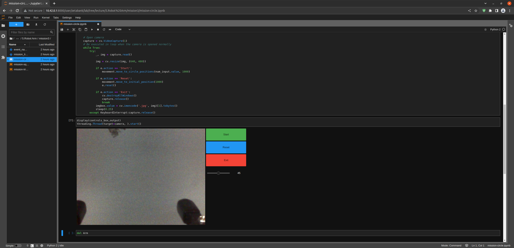

Draw a Square with the Robot Arm
Project Name: Draw a Square with the Robot Arm
Libraries used for this Mission
Here are the libraries needed for our Mission.
For GUI and robot camera display we will import:
OpenCV library for camera input and display streams.
IPython.display for jupyter environment camera/ GUI output.
ipywidgets for creating widgets in GUI output.
event_name_figure custom library for setting current action within GUI.
import cv2 as cv from IPython.display import display import ipywidgets as widgets from event_name_figure import EventName
For robot arm movement controls we will import:
Arm_Lib library for the robot arm movement functions.
mission_lib_figure custom library for the robot arm movement controls.
from mission_lib_figure import Movement import Arm_Lib
mission_lib_figure custom Library
mission_lib_figure.py
{kind=link}
The
mission_lib_figure.pyallows for functions that would control the robot arm movements. The python file itself contains Movement class with 6 initial variables.Arm: for storing the Arm_Device object (User Input when initializing the Movement object).
initial_position: for storing angle information for the six servos initial position (default value: [90, 90, 0, 90, 90, 170]).
angle_range: for calculating angles to draw a circle (default value: range(0, 361, 10)).
circle_positions: for storing angles where the robot arm moves to draw a circle sequentially.
square_positions: for storing angles where the robot arm moves to draw a square sequentially.
triangle_positions: for storing angles where the robot arm moves to draw a triangle sequentially.
class Movement: """ Functions for robot arm movements :Arm: Robot Arm object :initial_position: Initial position :angle_range: Used to calculate angles to draw a circle :circle_positions: Stores the position where the robot arm moves to draw a circle :square_positions: Stores the position where the robot arm moves to draw a square :triangle_positions: Stores the position where the robot arm moves to draw a triangle :time: The time length for the movement """ def __init__(self, Arm): self.Arm = Arm self.initial_position = [90, 90, 0, 90, 90, 170] self.angle_range = range(0, 361, 10) self.circle_positions = self.calculate_circle_positions self.square_positions = self.calculate_square_positions self.triangle_positions = self.calculate_triangle_positions
There are total of 4 main functions for calculate circle, rectangle, triangle coordinates, or reset the robot arm and 3 minor functions for move the robot arm with calculated coordinates. All the functions recieve time parameter from the user. This defined how fast a movement is to be finished.
Main function (reset the robot arm):
The function to reset the robot arm is (
move_to_initial_position). This function returns the six servers to their initial release position.Example:
def move_to_initial_position(self, time) : """ Move the Robot Arm to its initial position. :param time: Movement time for the Robot Arm :type: int """ self.Arm.Arm_serial_servo_write6_array(self.initial_position, time) sleep(2)
Main function (calculate circle, rectangle, triangle coordinates):
The functions responsible for calculate are (
calculate_circle_positions,calculate_square_positions,calculate_triangle_positions). These functions receives the variable length centered on the initial pose of the robot arm, calculates concentric circles, squares, and equilateral triangles according to the length, converts them into coordinates, and returns them to the position lists.Example:
def calculate_circle_positions(self, length): """ Receive the radius and performs an operation to draw a concentric circle. :param length: Concentric radius :type: int """ positions = [] for angle in self.angle_range: x = self.initial_position[0] + length * math.cos(math.radians(angle)) y = self.initial_position[1] + length * math.sin(math.radians(angle)) positions.append([x, y, self.initial_position[2], self.initial_position[3], self.initial_position[4], self.initial_position[5]]) return positions def calculate_square_positions(self, length): """ Receive the length of the base and perform an operation to draw a square. :param length: Base of a square :type: int """ positions = [ [self.initial_position[0] - length/2, self.initial_position[1], self.initial_position[2] - length/2, self.initial_position[3], self.initial_position[4], self.initial_position[5]], [self.initial_position[0] + length/2, self.initial_position[1], self.initial_position[2] - length/2, self.initial_position[3], self.initial_position[4], self.initial_position[5]], [self.initial_position[0] + length/2, self.initial_position[1], self.initial_position[2] + length/2, self.initial_position[3], self.initial_position[4], self.initial_position[5]], [self.initial_position[0] - length/2, self.initial_position[1], self.initial_position[2] + length/2, self.initial_position[3], self.initial_position[4], self.initial_position[5]] ] return positions def calculate_triangle_positions(self, length): """ Receive the length of the base and perform an operation to draw an equilateral triangle. :param length: Base of a equilateral triangle :type: int """ positions = [ [self.initial_position[0], self.initial_position[1], self.initial_position[2] - length * math.sqrt(3) / 6, self.initial_position[3], self.initial_position[4], self.initial_position[5]], [self.initial_position[0] - length / 2, self.initial_position[1], self.initial_position[2] + length * math.sqrt(3) / 3, self.initial_position[3], self.initial_position[4], self.initial_position[5]], [self.initial_position[0] + length / 2, self.initial_position[1], self.initial_position[2] + length * math.sqrt(3) / 3, self.initial_position[3], self.initial_position[4], self.initial_position[5]] ] return positions
Minor function (move the the robot arm sequentially):
The functions responsible for move the joints of the robot arm sequentially in the order of coordinates are (
move_to_circle_positions,move_to_square_positions,move_to_triangle_positions). These functions receives lists calculated in the main function and sequentially moves the six servos of the robot arm.Example:
""" Move the joints of the robot arm in the order of the received positions """ def move_to_circle_positions(self, length, time): for position in self.circle_positions(length): self.Arm.Arm_serial_servo_write6_array(position, time) sleep(0.1) def move_to_square_positions(self, length, time): for position in self.square_positions(length): self.Arm.Arm_serial_servo_write6_array(position, time) sleep(1) def move_to_triangle_positions(self, length, time): for position in self.triangle_positions(length): self.Arm.Arm_serial_servo_write6_array(position, time) sleep(1)
event_name_figure custom Library
event_name_figure.py
{kind=link}
This python library is responsbile for creating an action instance and providing settler funtions.
class EventName:
"""
Event name handler
:action: what action setting is the robot arm in
"""
def __init__(self):
self.action = 'stand_by'
def start_button_Callback(self, value):
self.action = 'Start'
def reset_button_Callback(self, value):
self.action = 'Reset'
def exit_button_Callback(self, value):
self.action = 'Exit'
def reset(self):
self.action = 'stand_by'
Lets Start the Mission!!!
Open the mission folder and open the mission-square.ipynb file.
mission-square.ipynb
{kind=link}
To control the robot arm from code, don’t forget to shut down the docker container. See here.
First, import in the necessary libraries.
import cv2 as cv
import threading
from time import sleep
import math
import ipywidgets as widgets
from mission_lib_figure import Movement
from event_name_figure import EventName
from IPython.display import display
Import and initialize the Arm Device.
import Arm_Lib
Arm = Arm_Lib.Arm_Device()
initial_position = [90, 90, 0, 90, 90, 30]
Arm.Arm_serial_servo_write6_array(initial_position, 1000)
Initialize the Movement and Event name objects. When initializing Movement object, provide the Arm object as the parameter.
e = EventName()
movement = Movement(Arm)
Create the GUI widgets.
button_layout = widgets.Layout(width='200px', height='60px', align_self='center')
output = widgets.Output()
# Widgets
num_input = widgets.IntSlider(min=1, max=90, step=1, value=45, layout=button_layout) # Get the length of one side of the square.
start_button = widgets.Button(description='Start', button_style='success', layout=button_layout)
reset_button = widgets.Button(description='Reset', button_style='primary', layout=button_layout)
exit_button = widgets.Button(description='Exit', button_style='danger', layout=button_layout)
imgbox = widgets.Image(format='jpg', height=480, width=640, layout=widgets.Layout(align_self='auto'))
img_box = widgets.VBox([imgbox], layout=widgets.Layout(align_self='auto'))
Slider_box = widgets.VBox([start_button, reset_button, exit_button, num_input], layout=widgets.Layout(align_self='auto'))
controls_box = widgets.HBox([img_box, Slider_box], layout=widgets.Layout(align_self='auto'))
Create the event handlers for the widgets. We connect these handlers with our event name, so that when the user presses the buttons, the names of the action changes.
start_button.on_click(e.start_button_Callback)
reset_button.on_click(e.reset_button_Callback)
exit_button.on_click(e.exit_button_Callback)
Create the camera function, and open the camera of our robot arm.
def camera():
# Open camera
capture = cv.VideoCapture(1)
To process the incoming frames from the capture variable, create a loop that will run as long as camera feed is open.
# Be executed in loop when the camera is opened normally
while True:
Within the loop grab the camera frame and resize it to (640, 480) using the cv.resize function. With the help of if function, listen to the action variable, and assign an appropriate function when the action variable is changed.
_, img = capture.read()
img = cv.resize(img, (640, 480))
if e.action == 'Start':
movement.move_to_square_positions(num_input.value, 1000)
if e.action == 'Reset':
movement.move_to_initial_position(1000)
e.reset()
if e.action == 'Exit':
cv.destroyAllWindows()
capture.release()
break
imgbox.value = cv.imencode('.jpg', img)[1].tobytes()
sleep(0.25)
Execute the camera() function. Since we are working with multiple different variables and functions, wrap the process within a threat.
Be sure to delete the robot after exiting the GUI.
del Arm
Draw a picture with a robot arm!
Now that we have built our program, using the GUI control and grab an object and place it somewhere else.
{kind=link}

(IMPORTANT)
- The preset angles of the arm might not be fit for the environment you are in. Go to the mission_lib_figure.py to change the angles or add more servo motor updates.
- It is highly recommended that you change and experiment around the mission_lib_figure.py file and see how the movement of the arm is set up.